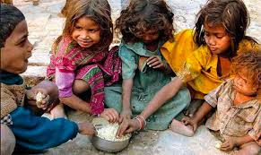
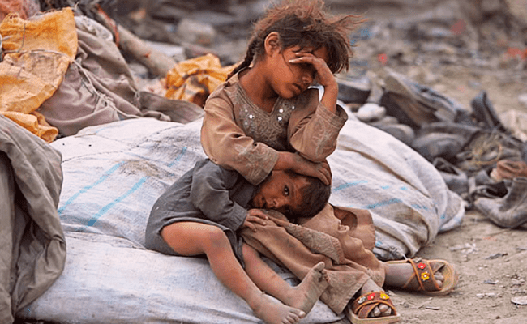
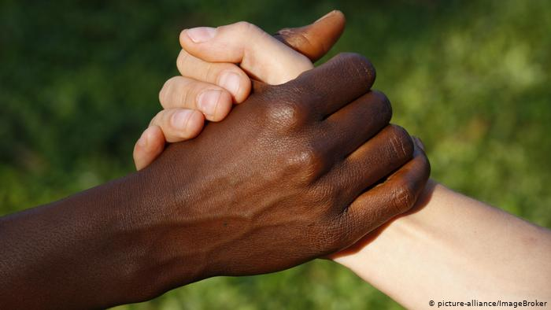
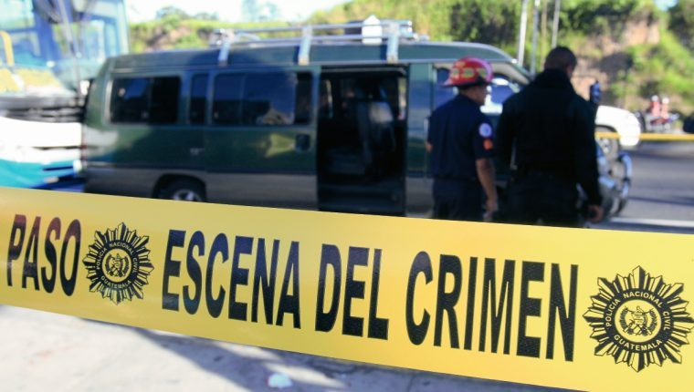
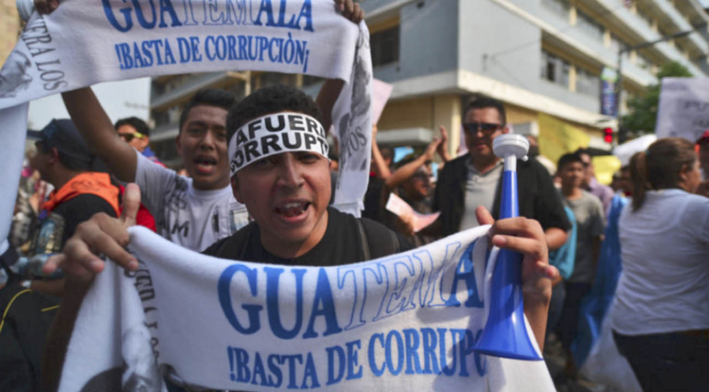
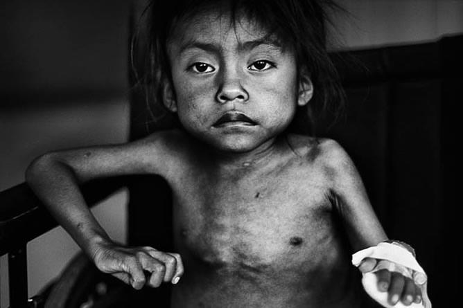
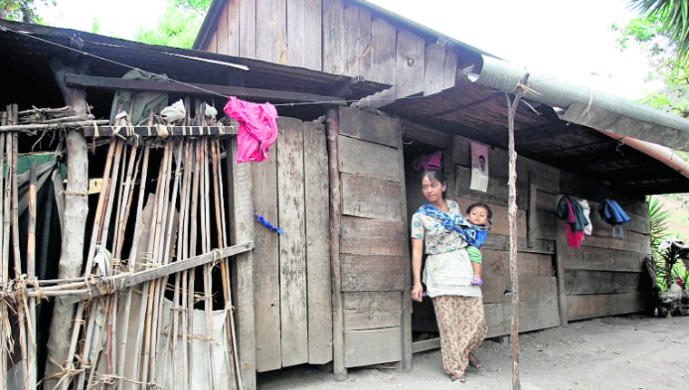
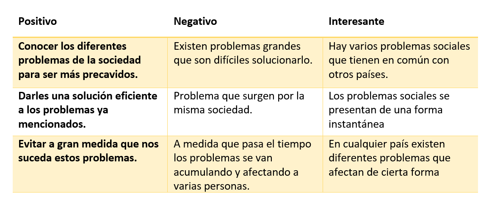

Problemas Actuales de la Sociedad en General
El Hambre

Según el informe de la FAO El estado de la seguridad alimentaria y la nutrición en el mundo, publicado a
finales del año 2017, después de varios años disminuyendo, el hambre en el mundo afectó a 815 millones de
personas en el año 2016, que representan al 11% de la población mundial. La existencia del hambre se debe
a dos factores fundamentales: los conflictos y los cambios que se producen en el clima. Los conflictos tienen
multitud de efectos desde el punto de vista alimentario en los países que los sufren, sobre todo si se alargan
en el tiempo. La situación se agrava cuando la vida de las personas depende de la agricultura y cuando se
producen dificultades para acceder a los alimentos en los mercados.
La Pobreza

Es otro de los grandes problemas actuales de la sociedad. De acuerdo con las estimaciones del Banco Mundial,
el 12,7% de la población mundial vive con menos de 1,9 dólares al día. Según el informe de la FAO que hemos
citado anteriormente, la recesión económica que deriva de los conflictos reduce el empleo y los ingresos y,
por lo tanto, la capacidad de las personas para alimentarse. Así mismo, en el mencionado informe se sostiene
que la reducción de la pobreza es más importante en países pacíficos y estables. De hecho, se estima que cada
año de violencia puede ralentizar la disminución de la pobreza en un 1%.
El Racismo

La discriminación por razón de la raza es una de las causas que origina el desplazamiento de miles de personas
en el mundo, las cuales se ven obligadas a abandonar sus hogares. Este tipo de discriminación tiene, además,
otras variantes que se reflejan en la limitaciones o requisitos a los solicitantes de asilo, la denegación del
acceso a los servicios públicos en condiciones de igualdad o la negación de la nacionalidad, la incitación al
odio o los abusos verbales y físicos. El miedo a la diversidad o a las personas que vienen de otros países
suele estar en la base de esta discriminación. Por lo tanto, los refugiados que se encuentran en estas
situaciones necesitan una protección especial.
Los Conflictos
Los conflictos que se viven en el mundo tienen otras consecuencias además de las materiales. Tener que huir de
tu hogar sin nada implica que cambias de lugar, que afrontas el futuro con gran incertidumbre y que tu vida y
la de tu familia pueden estar en peligro. Estas situaciones suelen generar, además, problemas que no son tan
visibles como depresiones, ansiedad o miedo en los niños. La asistencia a los refugiados o desplazados internos,
por lo tanto, no se puede centrar solo en satisfacer sus necesidades básicas de alojamiento y comida, sino que
también debe extenderse a todas esas consecuencias menos visibles.
Violecia de Genero
La violencia de género puede ser otra de las causas de los desplazamientos forzosos. Supone un problema grave que
pone en peligro la vida de las mujeres y las niñas, su integridad física y emocional y su desarrollo como personas.
Por ese motivo, ACNUR las protege de forma especial para garantizar que reciban una asistencia integral.
¿Sabías que hay un día específica centrado en la eliminación de la violencia contra la mujer? Este es el 25 de noviembre.
Se escogió esta fecha para honrar a las hermanas Mirabal, tres activistas políticas de la República Dominicana que fueron
brutalmente asesinadas en 1960 durante la dictadura de Rafael Trujillo (1930-1961).
Estos son los Principales problemas que ocurren en el entorno social, donde podemos identificar las consucuencias
y las causas que generan cada uno de los problemas. Incluso estos problemas se hacen cada vez mas grande porque lo
vemos todos los dias; en la television, en las redes sociales, en el internet o en cualquier otro medio donde nos
enteremos la magnitiud de los problemas sociales.
Problemas de la Sociedad Guatemalteca
Violecia

Guatemala es hoy día uno de los países más violentos del mundo. La violencia es una de principales amenazas contra la
seguridad pública y la salud. Según datos de 2016, hasta octubre del año pasado había 15 asesinatos al día. Esto significa
que hasta esa fecha hubo más de 4.600 crímenes.
Con estas cifras queda claro que la situación en el país centroamericano es realmente grave y preocupante. La situación es
comparable con un conflicto armado, aunque oficialmente no existe guerra.
Otro de los problemas que aqueja al país es la violencia contra las mujeres. De acuerdo a cifras de octubre del pasado año,
entre dos y cinco mujeres mueren diariamente de forma violenta en Guatemala. Además, al día 22 de ellas son violadas y una
de cada cinco adolescentes ya es madre o se encuentra embarazada.
Corrupción

Otro de los grandes problemas que enfrenta Guatemala es la corrupción. Este país lleva años sufriendo de una corrupción
generalizada que hoy día apenas comienza a tener solución. En 2015 los guatemaltecos vieron cómo el ex-presidente Otto
Pérez Molina y parte de su gabinete fueron acusados por corrupción y otro tipo de delitos como sobornos.
En el país se había establecido una red criminal que era manejada por el mismo gobierno. En 2016, la fiscal general
Thelma Aldana aseguró que unas 70 personas pertenecientes a la élite política y económica estaban implicadas en el
lavado de dinero y en sobornos. Durante muchos años la corrupción fue tolerada en el país, eso llevó a la impunidad
y al reforzamiento de las estructuras criminales.
Drogadicción
El país ha sido durante mucho tiempo un lugar para el trasiego de drogas, pero ahora tiene índices alarmantes de consumo.
Este problema afecta especialmente a la población joven. Por tanto, una de las principales acciones que intentan llevar a
cabo las autoridades es la prevención de la venta drogas y de bebidas alcohólicas cerca de los centros educativos.
Tras diferentes encuestas se ha determinado que una gran parte de las mujeres jóvenes que consumen drogas comenzaron en
este mundo solo por curiosidad. El lugar preferido para el consumo de estas sustancias suele ser la calle debido a la influencia
de las amistades.
Desnutrición

Otro de los grandes problemas presentes en este país centroamericano es la desnutrición. De enero a noviembre de 2016
fallecieron 111 niños menores de 5 años a causa de la desnutrición. Este es un problema que afecta a más de la mitad de
la población guatemalteca.
Y según una investigación realizada por la UNICEF en 2014, el 43.4% de la población infantil (menores de 5 años) presentó
cuadros de desnutrición crónica. Esto significa que cuatro de cada diez niños en Guatemala sufrían de un retardo en la
talla para su edad.
Una parte del problema de la desnutrición ha sido causada por los efectos de la pérdida de las cosechas, por los bajos
ingresos del sector cafetalero y por la disminución de los servicios de salud. El mayor número de casos se encuentran en
las áreas rurales, en la población indígena y en los niños de padres con bajos niveles de educación.
Pobreza

La pobreza es otro de los graves problemas que aqueja a la población guatemalteca. La corrupción, el desempleo y el
analfabetismo son algunos de los factores que han incidido en los altos índices de pobreza de este país. Para el 2016,
Guatemala figuraba como uno de los países más violentos y pobres del mundo.
Este país centroamericano es considerado como un país rico lleno de pobres. Si bien es cierto que durante los últimos
años la economía local ha tenido un crecimiento estable en torno al 4%, esto no ha tenido repercusiones en la sociedad.
Lo que quiere decir que una gran parte de la población continúa en la pobreza.
Según cifras, esta sería del 59,3 %. Estos datos dejan en evidencia que Guatemala es uno de los países latinoamericanos
con más desigualdad.
Matriz PNI

Conclusion
La conclusion sobre este tema se basa en que estos problemas sociales siguien existiendo en nuestro pais, que han surgido
desde hace mucho tiempo afectando la calidad de vida de los guatemaltecos e impidiendo el desarrollo. Para ello es algo que
debemos remediar por toda la sociedad colaborandonos entre si.